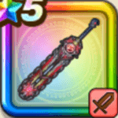

神喰らいの大剣
攻略班 10点 / メビウスフォースメメントモリ・滅天裂く凶刃いきなりメビウスフォース神へ挑む闘志レベルアップ無限の可能性
くわしい特徴
【レベル別習得スキル】 Lv1攻撃力+5 Lv10メビウスフォース（消費MP：17）自身の特殊効果の「属性ダメージ+」の値が高い属性を2つフォースとして付与。一部の攻撃に敵ごとに有効な属性を付加(戦闘中1回のみ使用可能) Lv20メメントモリ・滅（消費MP：最大MPの15%）自身のレベルを戦闘中10上げ一部を除くステータスが上昇し再行動する。代償に味方全体のHPを消費し2ターン後に死亡(戦闘中1回のみ使用可能) Lv30天裂く凶刃（消費MP：60）敵全体に敵の数に応じて威力が800%~1500%に変化するガード・みかわしされない斬撃ダメージ(メタル系に+99)を与える Lv33????系へのダメージ+5% Lv36鳥系へのダメージ+5% Lv40攻撃力+12 Lv43【両】スキルの斬撃ダメージ+3% Lv46【両】全属性ダメージ+3% Lv50いきなりメビウスフォース（消費MP：12）戦闘開始時、自身の特殊効果の「属性ダメージ+」の値が高い属性を2つフォースとして自身に付与。一部の攻撃に敵ごとに有効な属性を付加 Lv50神へ挑む闘志（消費MP：20）戦闘開始時に自身のテンションを2段階上げる。敵に????系が含まれているならスーパーハイテンションになり、まもりのたてを付与 Lv50レベルアップ（消費MP：最大MPの2%）戦闘開始時に領域「レベルアップ」発動(????系の敵なら超越領域に変化)。味方のレベルを戦闘中に確率で上げ、一部を除くステータスが上昇 Lv50無限の可能性（消費MP：最大MPの3%）戦闘中、自身が会心の一撃を3回発生させると超越領域「レベルアップ」を発動する 【限界突破スキル】 1凸スキルの斬撃・体技ダメージ+7% 2凸スキルの斬撃・体技ダメージ+7% 3凸スキルの斬撃・体技ダメージ+7% 4凸スキルの斬撃・体技ダメージ+7%